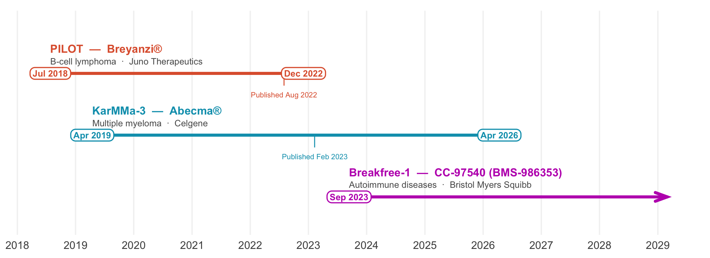

Configurable clinical data harmonization with help from LLMs
Leslie Emery
Informatics & Predictive Sciences
Clinical trial data is precious
Stock image
Cross-study analysis requires data harmonization

Data harmonization is tedious and repetitive
Code to harmonize each dataset
👩🏻💻 (Don’t) plan output format
Data shape
- ↔︎️ Widen
- 🔑 Primary keys
→
Columns
- 🔍 Identify columns
- 🏷️ Rename
→
Column content
- 🔢 Data type
- 🗂️ Categorical values
- ❓ Missing value codes
- 📏 Unit of measure
x
Datasets (domains)
- ⚠️ Adverse events
- 👥 Demographics
- 💉 Exposure
- 🏥 Hospitalization
- 🧪 Lab tests
- 💊 Medications
- 🩺 Patient visits
- ⏱️ Time to event
x
Every study
My configurable workflow with LLM assistance is better, faster
One time setup
🔃 update as needed
Data model
- 📄 .yaml format
- 🗂️ One per output dataset
+
Pipeline code
- 🌳 Read data model
- 📚 Read study harmonization configs
- ⚙️ Config-based harmonization code
+
For each study
Harmonization configs
- 📄 .yaml format
- 📚 One per output dataset per study
The data model specifies the output format in detail

# Each terminal node is a data frame expected
# in the output
data_structure:
- adverse_events
- concomitant_medications
- exposure
- hospitalization
- lab_tests:
- albumin
- CD3
- CD4
- CRP
- kappa_flc
- lambda_flc
- ...
- response:
- best_overall_response
- overall_response
- subject_level
- subject_visit
- time_to_event:
- duration_of_response
- event_free_survival
- progression_free_survival
- time_to_progressionBootstrap the initial data model with Posit Assistant
The subject_level_labels object contains a data dictionary for each data frame in subject_level_sources. The project goal is to harmonize the data across all of these studies, whether the data comes from the sdtm dm file or the adam adsl file. Reviewing all of the variables described in the data dictionaries, come up with a list of the variables that should be in the harmonized dataset. Substantially similar variables should be combined into just one variable for simplicity. Use meaningful snake case variable names based on the descriptions from the data dictionaries. Only include a variable in the harmonized dataset if a similar variable is present in at least 3 of the studies.
Make this into a yaml format file named subject_level.yaml (saved in this workspace) that matches the format in example.yaml. Each item in the yaml is a variable and unique variable names from the individual source datasets are stored as a list in the inputs attribute. The data_type should be the R data type that most closely aligns with the input variables that will contribute to the harmonized variable. Ignore other attributes from the example for now.
subject_level data model
unique_subject_id:
key: true
data_type: character
character_pattern: ^[A-Z0-9-]+-\d+-\d+$
inputs:
USUBJID
site_id:
data_type: character
character_pattern: ^\d+$
inputs:
- SITEID
- SITE_ID
baseline_height_cm:
data_type: numeric
numeric_units: centimeter
inputs:
- HTCMBL
- HEIGHTBL
terms:
loinc: 8302-2
snomed: C0005890
diagnosis_date:
data_type: Date
date_format: "%Y-%m-%d"
inputs:
- DIAGDT
- DIAGDTC
- DXDT
actual_arm:
data_type: factor
factor_allowed_values:
- Arm A
- Arm B
- Arm C
inputs:
- ACTARMHarmonization configs match observed data to the data model
unique_subject_id:
- {file: dm, column: subject_id, data_type: character}
- {file: adsl, column: USUBJID, data_type: character}
site_id:
- {file: dm, column: SITE_ID, data_type: character}
- {file: adsl, column: SITE, data_type: character}
baseline_height_cm:
- {file: adsl, column: HEIGHTBL, data_type: numeric, numeric_units: inch}
diagnosis_date:
- {file: dm, column: DIAGDTC, data_type: character}
actual_arm:
- {file: dm, column: study_arm, data_type: character}
- {file: adsl, column: ACTARMCD, data_type: character}When the simplest example isn’t
Config-based harmonization code
derive_subject_level <- function(){
# Get the set of columns to be included in the output
domain_spec <- read_daap_specification("subject_level")
# Get the harmonization config
domain_config <- read_harmonization_config("subject_level")
domain_config_df <- harmonization_config_to_tibble(domain_config)
# Which columns need to be in the output?
expected_keys <- purrr::map_chr(domain_spec$keys, .f=names)
expected_keys_and_columns <- c(expected_keys,
purrr::map_chr(domain_spec$columns, .f=names))
# Use the harmonization config to find the source data for each column
domain_config_df <- domain_config_df %>%
mutate(
preferred_file = case_when(
"adsl" %in% file ~ "adsl",
TRUE ~ first(file)
),
.by=output_column
)
# Get the mapped columns from each source file
get_mapped_data <- function(source_file){ # source_file <- "dm"
input_type <- ifelse(source_file %in% names(data_files_read$adam), "adam", "sdtm")
source <- data_files_read[[input_type]][[source_file]](config=config)
source_map <- domain_config_df %>%
filter((preferred_file == source_file | output_column %in% expected_keys ) &
file == source_file)
rename_map <- source_map$column
names(rename_map) <- source_map$output_column
mapped_data <- source %>%
select(all_of(source_map$column)) %>%
rename(all_of(rename_map))
}
subject_level <- purrr::map(unique(domain_config_df$preferred_file), .f=get_mapped_data)
subject_level <- purrr::reduce(subject_level, .f=full_join) # running this for each split of response
return(subject_level)
}The harmonization config files maximize human attention/time spent reviewing LLM output
You get a great data dictionary for your output basically for free with the harmonization configs + data model
We’ve done this in a pilot project and it gets us pretty close to final state so we can focus our time on the hard parts
We are building out a Claude Code plugin using our daapr framework
You can use these approaches for other use cases
Acknowledgements
Managers
- Garth McGrath
- Burak Kutlu
Project team
- Jason Moore
- Clara Amorosi
- Mandeep Takhar
2025 intern
Eslam Abousamra, MPH
PhD student at CUNY Graduate School of Public Health and Public Policy